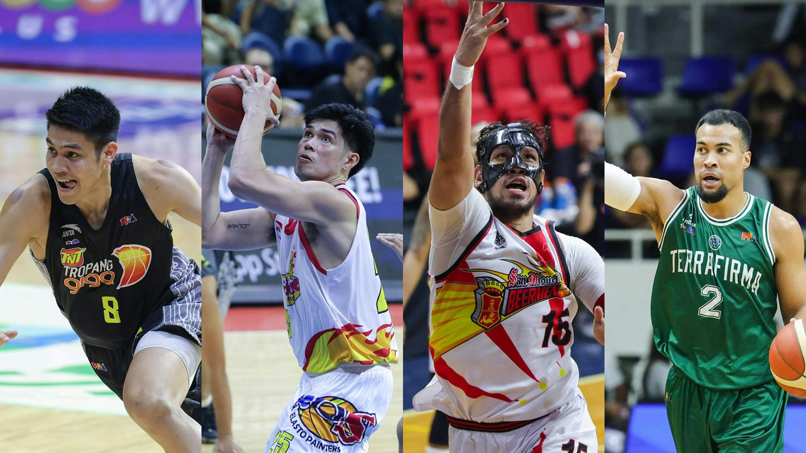

PBA schedule: Do-or-die for TNT, Rain or Shine, San Miguel, and Terrafirma
May 14, 2024

Two slots have been filled for the PBA Season 48 Philippine Cup semifinals, with two more to go.
Two slots have been filled for the PBA Season 48 Philippine Cup semifinals, with two more to go.
On Wednesday, the second matchup following Ginebra vs. Meralco will be set, with a chance to either have a fresh pairing or feature another rivalry showdown.
In the first game at 4:30 p.m. from the Ninoy Aquino Stadium, Terrafirma looks to extend its fairy-tale run all the way to the semifinals, where no Dyip team have gone before.
Yes, by winning a seventh game in the Philippine Cup and a first playoff game in franchise history, this Terrafirma team is basically the best ever.
Led by former top picks Stephen Holt and Isaac Go, alongside reliables Juam Tiongson and Javi Gomez de Liaño, this rag-tag Dyip squad look to become the latest no. 8 team to make an improbable trip to the Final Four.
However, standing in their way are the mighty San Miguel Beermen, who despite being on a rare losing skid are still the standard by which all PBA teams are measured.
Before this uncharacteristic two-game slide, putting them on the ropes, San Miguel won 12 straight games dating back to the previous Commissioner’s Cup, which was unbelievably a franchise record.
The Beermen have the weapons, MVP June Mar Fajardo and CJ Perez lead the team’s vaunted “Death 15” If there’s one team to count on that can and will bounce back, it’s San Miguel.
In the second game at 7:30 p.m. TNT and Rain or Shine fight for the fourth and final semis seat after dragging each other to a knockout Game 3.
The Elasto Painters look to make their first PBA semifinals in five years, and coach Yeng Guiao has an array of players to use at his disposal.
Led by former top picks Stephen Holt and Isaac Go, alongside reliables Juam Tiongson and Javi Gomez de Liaño, this rag-tag Dyip squad look to become the latest no. 8 team to make an improbable trip to the Final Four.
However, standing in their way are the mighty San Miguel Beermen, who despite being on a rare losing skid are still the standard by which all PBA teams are measured.
Before this uncharacteristic two-game slide, putting them on the ropes, San Miguel won 12 straight games dating back to the previous Commissioner’s Cup, which was unbelievably a franchise record.
The Beermen have the weapons, MVP June Mar Fajardo and CJ Perez lead the team’s vaunted “Death 15” If there’s one team to count on that can and will bounce back, it’s San Miguel.
In the second game at 7:30 p.m. TNT and Rain or Shine fight for the fourth and final semis seat after dragging each other to a knockout Game 3.
The Elasto Painters look to make their first PBA semifinals in five years, and coach Yeng Guiao has an array of players to use at his disposal.